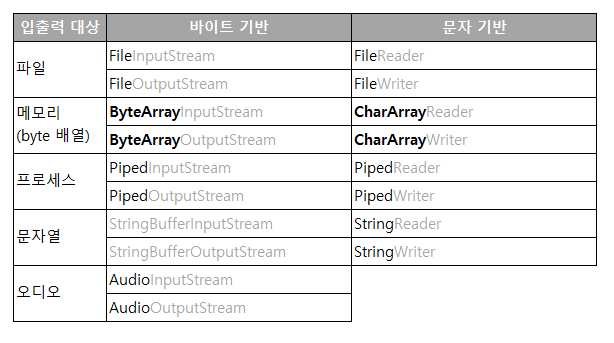
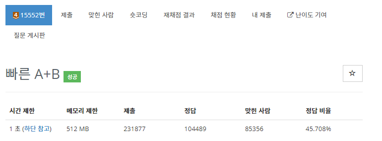
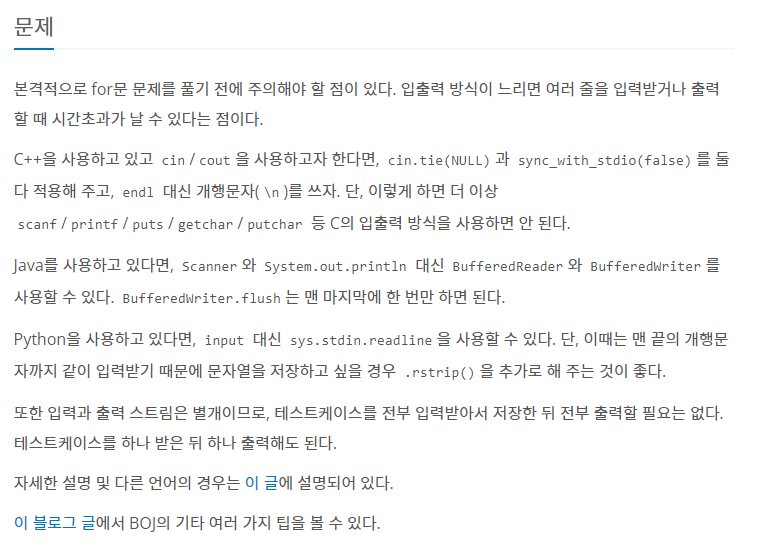
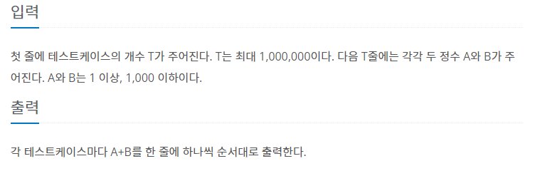

[Java/자바] 입출력을 위한 스트림(Stream)
Stream
데이터를 전달하기 위해 사용되는 연결통로
입력과 출력을 I/O (Input/Output) 라고 부른다. 그래서 각 언어마다 입출력을 위한 라이브러리에는 io 라는 단어가 사용된다. c언어의 stdio.h 와 java의 java.io 가 예시이다. 사용자가 데이터를 입력하면 이 데이터를 전송하여 출력을 하는데, 이 사이에서 매개체로 이루어지는 것이 스트림이다.
스트림은 단방향 통신만 가능해 입력과 출력을 동시에 진행할 수 없다. 동시에 하기 위해 입력스트림과 출력스트림 2개가 필요하다. 스트림은 먼저 보낸 데이터를 우선으로 연속적으로 데이터를 주고 받는다. 선입선출(First in First Out : FIFO)의 큐(Queue)와 같은 구조로 이루어졌다.
스트림은 바이트 기반으로 이루어져있다. 바이트 기반으로 이루어졌다는 건 데이터 입출력 단위가 1byte 라는 것이다. 입출력을 진행하는 대상의 종류에 따라서 스트림을 골라 사용할 수 있으며 모두 InputStream과 OutputStream을 기반으로 하는 자식이다.
c언어에서 char는 1byte의 크기를 가지고 있다. 하지만 자바에서 char는 2byte 크기를 가지고 있어, 1byte로 입출력이 진행되는 바이트기반 스트림으로 문자를 처리할 수 없다. 이를 위해 문자기반 스트림이 제공된다.
InputStream → Reader
OutputStream → Writer
입력스트림은 Reader로, 출력스트림은 Writer로 사용된다. 각 대상별로 사용할 수 있는 바이트기반 스트림과 문자기반 스트림은 아래 표와 같다.
StringBufferInputStream/OutputStream은 더 이상 사용 되지 않는다.
각 대상을 의미하는 이름 뒤에 스트림만 바꿔주면 된다. 바이트배열인 ByteArray 이름만 CharArray로 바꿔주면 모두 비슷한 이름으로 헷갈리지 않게 쓸 수 있다.
문자 데이터를 다루는데 필요한 또 하나의 정보는 인코딩이다. 여러 종류의 인코딩과 자바에서 사용하는 유니코드 간의 변환을 자동으로 처리해준다. Reader는 특정 인코딩을 읽어 유니코드로 변환, Writer는 유니코드를 특정 인코딩으로 변환하여 저장한다.
실제 데이터를 주고 받아 입출력을 시행하지는 않지만, 스트림의 기능을 보완해주는 보조 스트림이 존재한다. 보조 스트림은 자체적으로 입출력을 할 수 없어 기반 스트림을 필요로 한다.
1. Buffered
1) BufferedInputStream / BufferedOutputStream
스트림의 입출력 효율을 높이기 위해 사용한다. 버퍼를 이용해 여러 바이트를 입출력하는 것이 더 빠르고 효율적으로 사용할 수 있다. 버퍼는 임시적으로 데이터를 보관하는 임시 메모리로 사용된다.
생성자
- BufferedInputStream(InputStream in, int size), BufferedInputStream(InputStream in)
- BufferedOutputStream(OutputStream out, int size), BufferedOutputStream(OutputStream out)
: 각각 InputStream을 입력소스로, OutputStream을 출력소스로
버퍼의 크기를 지정해주지 않으면 8192byte 크기로 생성된다.
입력소스로 내용을 읽어 내부 버퍼에 저장하고, 버퍼에 저장된 데이터를 읽는다. 다음 버퍼를 읽기 위해 read메서드가 호출되면 다시 버퍼 크기만큼 데이터를 읽어 버퍼에 저장한다. 출력소스는 wirte메서드를 이용한 출력이 버퍼에 저장되고, 버퍼가 가득 차면 출력소스를 출력한다. 버퍼에 데이터가 남아있는 채로 프로그램이 종료되는 것을 방지하여 출력 뒤에는 flush()와 close()를 호출해 버퍼를 깨끗하게 정리해줘야 한다.
write(): 버퍼의 값을 전부 출력한다. / flush(): 남아있는 데이터를 모두 출력한다.
보조 스트림을 사용한 경우 기반 스트림의 close()없이 보조 스트림의 close()만 호출해도 된다.
2) BufferedReader / BufferedWriter
바이트기반과 동일하게 버퍼를 사용해 효율을 높인다. 키보드 입력이 있을 때마다 버퍼로 전달하는 방법보다 버퍼가 차거나 개행 문자 입력 시 버퍼 내용을 프로그램에 한번에 전송해 많은 문자를 입력받을 시 확실히 효율적인 방법이다.
ButteredReader의 readLine()을 사용해 데이터를 라인단위로 읽고, BufferedWriter는 newLine()을 통해 줄바꿈을 할 수 있다.
해당 스트림은 Enter만 인식하여 문자열로 고정하여 저장한다. 때문에 공백을 기준으로 데이터를 나누거나 형변환을 하고 싶은 경우 데이터 가공이 필요하다. 공백 단위로 나눌 경우 StringTokenizer의 nextToken() 메서드를 통해 분류해 순서대로 호출할 수 있으며, String.split()을 사용할 수도 있다.
2. InputStreamReader / OutputStreamWriter
바이트기반 스트림을 문자기반 스트림으로 연결해주는 역할을 한다. Reader와 Writer의 특징인 인코딩을 통해 바이트기반 스트림의 데이터를 지정된 인코딩의 문자데이터로 변환할 수 있다.
생성자
- InputStreamReader(InputStream in) / InputStreamReader(InputStream in, String encoding)
- OutputStreamWriter(OutputStream out) / OutputStreamWriter(OutputStream out, String encoding)
: 인코딩을 지정해주지 않으면 OS에서 사용하는 기본 인코딩 문자로 변환하는 스트림 생성
위 공부한 내용을 바탕으로 백준 15552번을 풀어볼 수 있다.


문제에 대한 설명부터 일반 입출력 연산이 아닌 더 빠른 연산을 사용하라고 설명되어 있다.

빠른 A+B는 입출력 단계가 아닌 반복문 단계에 포함되어 있다. 반복문을 이용하여 빠른 입출력을 진행하는 문제다. 입력받은 T만큼 반복하며 자바의 경우 BufferedReader와 BufferedWriter를 이용해 문자를 입력받아 연산 후 출력을 진행한다.
BufferedReader는 버퍼를 이용하는 연산으로 “Enter”만 인식해 “문자”로 저장된다. 입력된 문자를 공백을 기준으로 나누기 위해 StringTokenizer를 이용했다.
import java.io.IOException;
import java.io.BufferedReader;
import java.io.BufferedWriter;
import java.io.InputStreamReader;
import java.io.OutputStreamWriter;
import java.util.StringTokenizer;
간편하게 사용하고 싶으면 java.io.*; 만 해도 되지만, 어느 클래스를 가져왔는지 확실하게 알려주기 위해 직접 작성했다. BufferedReader의 readLine() 사용 시 예외처리가 필요해 IOException을 이용했다.
public static void main(String[] args) throws IOException {
BufferedReader br = new BufferedReader(new InputStreamReader(System.in));
BufferedWriter bw = new BufferedWriter(new OutputStreamWriter(System.out));
int T = Integer.parseInt(br.readLine());
for(int i=0; i<T; i++){
StringTokenizer st = new StringTokenizer(br.readLine()," ");
int a = Integer.parseInt(st.nextToken());
int b = Integer.parseInt(st.nextToken());
String sum = Integer.toString(a+b);
bw.write(sum+'\n');
}
bw.flush();
bw.close();
}
T만큼의 반복을 위해 int형으로 변환하여 반복을 진행했다.
입력받은 문자를 공백을 기준으로 토큰으로 분류하는 StringTokenizer클래스를 인스턴스한다. nextToken()메서드를 이용해 분류된 다음 토큰을 가져와 각 변수에 대입한다. 대입하기 전에 문자를 정수로 형변환을 진행해야 하며, 문자를 출력하는 BufferedWriter를 위해서 두 수의 합을 다시 문자로 변환하여 저장한다.
두 수의 합을 위해서 정수로 형변환을 진행했고
문자의 출력을 위해서 문자로 형변환을 진행했다.
줄바꿈 문자를 넣어주지 않으면, 버퍼에 입력된 순서대로 출력만 진행이 되어 모든 문자들이 붙어서 출력된다. 이를 위해 제일 마지막에 \n을 함께 넣어주면 예제에 나오는 모습대로 출력이 되는 걸 볼 수 있다.